Combinational Logic Design¶
Abstract
- 组合电路定义（逻辑电路的两大类型：组合逻辑电路、时序逻辑电路）
Definition of Combinational Circuits - 模块与层次设计
Hierarchical Design - 逻辑事件的描述方法*
Description of logic events - 逻辑门的主要参数
Technology Parameters
扇入（Fan-in）、扇出（Fan-out）、噪音容限（Noise Margin）、门的成本（Cost for a gate）、传输延迟（Propagation Delay） - 器件状态值或状态表与正逻辑，负逻辑的概念
Positive and Negative Logic - 三态门使用原则与总线（BUS）
BUS - 信号系统延时、延时模型、上升和下降时间、时钟上升和下降沿概念。
Delay Models, Positive and Negative Edge - 组合逻辑电路分析方法
Analysis of Combinational Circuits - 组合逻辑电路的设计方法
Design of Combinational Circuits - 函数与函数模块，基本逻辑功能
Functions and functional blocks - 计算机中的常用组合逻辑电路（功能芯片）
Frequently used Combinational Circuit in Computer Design
译码器、编码器、数据选择器（多路复用选择器）、数据分配器。 - 组合函数的实现技术
Implementing Combinational Functions Using:
译码器和或门
Decoders and OR gates
多路复用器（加反相器）
Multiplexers (and inverter) - 使能信号（EN，OE）的作用
Function of Enable Signal - 组合电路的迭代结构
Iterative combinational circuits - 算术函数：了解加、减、乘、除、增量函数及运算
Arithmetic function: Add, subtraction, multiplication, division, increment - 补码运算
2’s complement - 半加器及全加器函数及电路设计
Equations and Circuit implementation of 1 bit Half Adder and Full Adder - 多位全加器、全减器及设计
Design of multiple-bit Full Adder/ Subtracter - 超前进位：进位传递与延迟，进位函数：generate, Gi、propagate, Pi
Carry Lookahead: carry propagation and delay
Design Procedure （标准设计步骤）¶
回顾：组合逻辑电路
- 输入由输出唯一确定，与历史输入无关
- 若有m个输入，n个输出，则有n个布尔函数，每个函数都是m个输入的函数
主要设计过程
- Specification
写出电路的功能要求，真值表，或者逻辑函数 - Formulation
用真值表或者逻辑函数描述电路的功能 - Optimization
优化逻辑函数，化简逻辑函数（比如卡诺图），进行两级优化或者多级优化 - Technology Mapping
选择合适的技术映射，选择合适的门（通常是与非和或非门）（工艺映射）
为什么需要这步
很多时候需要用预先定义好的与非门，或者其他基本模块（如 XOR）直接套入电路中去，可以降低电路的成本和延迟。
- Verification
验证电路的正确性，仿真
Hierarchical Design（层次化设计）¶
与写代码一样，设计电路也要模块化。
- 将逻辑函数划分为足够小的blocks
- 不可再划分的称之为primitive block(如与非门、异或门等)
- Reusable Functions:
把常用的操作抽象成模块，并提前定义好延迟等等特性。当需要使用时，我们把电路引脚接入即可。
- Reusable Functions:
- 所有包括被划分模块的集合称为hierarchy（层？）
Eg
- 顶层（Top Level）:定义9个输入和1个输出
- 第二层（2nd Level）：四个3位

实例化模块和函数调用的区别
电路上实例化模块：复制一块并嵌入到电路中。且同时实例的模块是同时在运行，如上图中四个实例化的奇函数模块。（实际上硬件里做串行是非常麻烦的，需要状态机来约束行为逻辑）
但 C 语言函数体只有一份代码，只是 PC 跳到函数部分。
Top-Down（自顶向下） versus Bottom-Up（自底向上）
- 自顶向下划分模块、分解功能设计
- 自底向上从基本模块开始构建复杂逻辑电路
Design Procedure¶
BCD to Excess-3 code converter
-
Specification
- Transforms BCD code for the decimal digits to Excess-3 code for the decimal digits
- BCD code words for digits 0 through 9: 4-bit patterns 0000 to 1001, respectively
其他输入认为是无关项。 - Excess-3 code words for digits 0 through 9: 4-bit patterns consisting of 3 (binary 0011) added to each BCD code word
- Implementation:
- multiple-level circuit.
- NAND gates(including inverters)
-
Formulation

-
Optimization
- two-level
W X Y Z 输出也需要四个逻辑函数。
单独 ABCD 四输入 对应一个输出 W, 用卡诺图化简。
得到 \(W=A+BC+BD, X=\overline B C+\overline B D+B \overline C\overline D, Y=CD+\overline C\overline D, Z=\overline D\)
- multiple-level
\(G=7+10+6+0=23\).
优化后: \(T_1=C+D, W=A+BT_1\),
\(X=\overline BT_1 + B \overline C\overline D,\)
\(Y=CD+\overline C\overline D, Z=\overline D\)
\(G=2+4+7+6+0=19\), 最多是三级电路。
再次优化：
\(\overline C \cdot \overline D=\overline{C+D}=\overline{T_1}\)
\(T_1=C+D, W=A+BT_1, X=\overlineB T_1 + B \overline C \cdot \overline D\)
\(Y=CD+\overline C\overline D, Z=\overline D\)
\(G = 2 +1 + 4 + 6 + 4 + 0 = 17\)，最多是四级电路。
为什么要算 T1 非
ABCD 是外部输入的引脚，一般同时有原变量和反变量。但 T1 是内部产生的信号，对这个信号的非要自己计算得到。
- two-level
-
Technology Mapping
Mapping with a library containing inverters and 2-input NAND, 2-input NOR, and 2-2 AOI(与或非) gates

-
Verification
Chip Design Styles¶
- Full custom: 全部自己定制化，不用先定义好的模型。（因为库会考虑通用性，完整，带来成本开销比较高，延迟也相对大）
这种实现方式，研发成本高，但生产成本最低。 用于高性能，或者生产量非常大的时候。 Justifiable only for dense, fast chips with high sales volume. - Standard cell: 使用预先规定好的标准库(如几输入的与门)
- Gate array: 研发成本低。买现成的芯片，写进代码即可执行。成本最低（不用流片）
Cell Libraries(单元库)
类似于C的标准库。但是C中多次调用某一函数时，编译过后该函数体只出现一次；而Verilog中实例化某一模块n次则该模块就会出现n次。
- Cell - a pre-designed primitive block
- Cell library - a collection of cells available for design using a particular implementation technology
- Cell characterization - a detailed specification of a cell for use by a designer - often based on actual cell design and fabrication and measured values
包括原理图，芯片面积，输入负载，延迟，工艺映射的模板库，硬件描述语言如何实现。
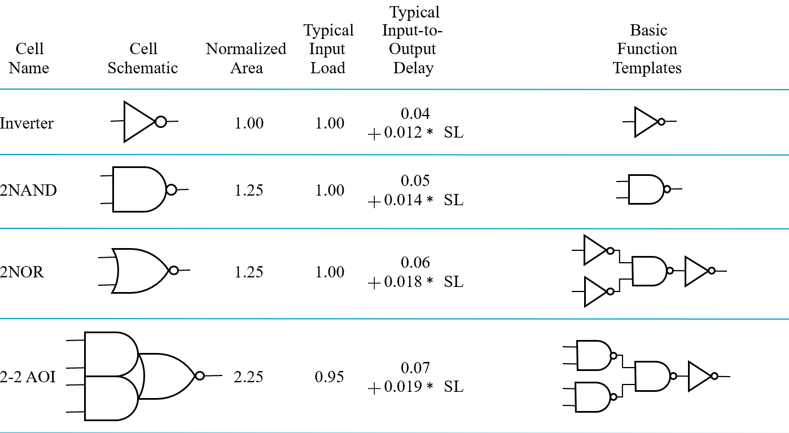
Mapping to NAND gates¶
-
假设：不考虑 gate loading 和 delay. 可以有任意输入的与非/或非门。 The mapping is accomplished by:
-
Replace :
- 与 \(\rightarrow\) 与非加非
- 或 \(\rightarrow\) 非加与非

- Pushing inverters through circuit fan-out points
这是为了找到成对的非门，从而消去

- Canceling inverter pairs
Example

b -> c 就是把 5 推出散出点，随后和其他非门相消。
- 也可通过逻辑函数化简来进行工艺映射：如
NONR 与 NAND 基本相同，除了 replace 这步。
Verification¶
验证方法：真值表/仿真/逻辑函数
小细节：仿真输出中有小脉冲，因为延迟产生。如果没有惯性延迟，我们要考虑把它吸收掉。
Behaviour Simulation 看不到，因为他不考虑传输延迟。多考虑使用有延迟的仿真
Combinational Logic(组合逻辑)¶
functional block: 偏高层逻辑应用，如译码器，选择器。
基本逻辑函数¶
- 常量函数(Value-Fixing)：\(F = 0\) or \(F = 1\)
- 传输函数(Transferring)：\(F = X\)
- 逆变函数(Inverting)：\(F = \overline X\)
-
使能函数(Enabling)：\(F = X \cdot E_n\) or \(F = X + \overline {E_n}\)
- 通过使能控制输出是否可变，分为两种，比如在与的形式中，只有 En 为 1 时，F 表现为X 的值；反之输出必定为 0（注意:和三态门不同）；
Eg

(a) when disabled, output 0
(b) when disabled, output 1. 其中也可以写 \(\overline {EN}\) 然后直接接或门，不用标 inverter.
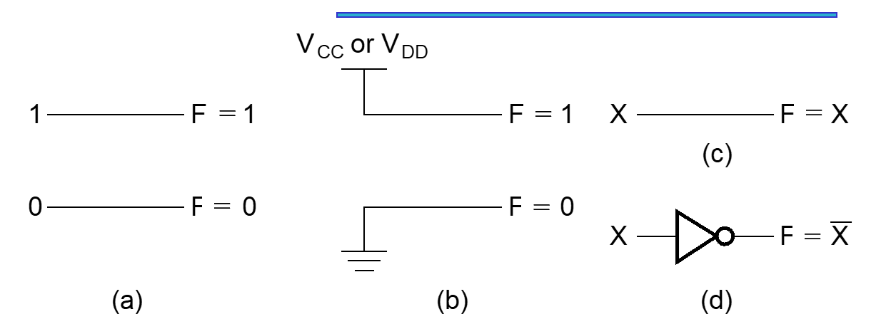 b 中表示接地和接电源。
多位基本函数¶
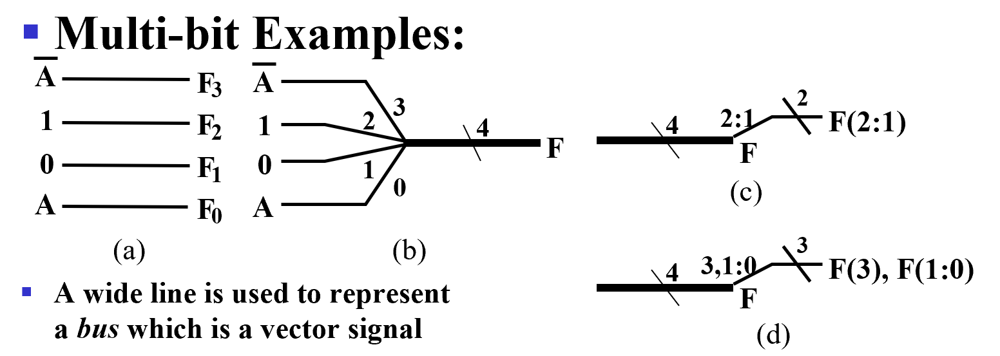
- 粗线为总线（bus）
-
b 中 4 表示位宽，4 位信号。
-
Sets of bits can be split from the bus as shown in (c) for bits 2 and 1 of F.
- The sets of bits need not be continuous as shown in (d) for bits 3, 1, and 0 of F.
译码器（Decoder）¶
输入位小于等于输出位
变量译码器：输入n位，输出\(2^n\)位
实际上，变量译码器每一个输出位对应一个最小项
如：3-8 译码器

其真值表：

常见变量译码器

1-to-2-Line Decoder and 2-to-4-Line Decoder
可以将一个2-4译码器拆分为两个1-2译码器以及4个与门
译码器常用于内存，接在地址总线用于寻址。
但 对于 \(32-2^{32}\) 译码. 成本 \(32\times 2^{32}\) 很高
如何减少实现成本？
行列译码¶
- 对于3-8 译码器，可以将输入分成两部分，A 用 1-2 译码器, B C 用 2-4 译码器

行列译码：对于 \(n - 2^n\) 译码器，可以分行列设计两个译码器，一个 \(\dfrac{n}{2}\) 输入 \(2^{\frac{n}{2}}\) 的行译码器，一个 \(\dfrac{n}{2}\) 输入 \(2^{\frac{n}{2}}\) 输出的列译码器。
这样再把行列的输出（下图中的交叉点）用两输入与门连接，我们只需要 \(2^{\frac{n}{2}}\times 2^{\frac{n}{2}}=2^n\) 个 AND 门, 中间与门的成本是 \(2^n\times 2 =2^{n+1}\).

译码延迟加大（多一级与门的延迟），但降低成本。
带有使能的译码器¶
功能表：

- 角度一：EN为使能端，控制A1\A0
- 角度二：A为使能端，控制EN信号在哪个引脚输出。因而也叫做demultiplexer(分配器).

通过最小项得到任意逻辑函数¶
把译码器输出（最小项）或起来，得到任意的逻辑函数
全加器

前向纠错编码
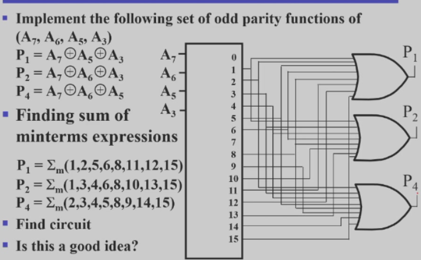
- 输出为1、2、4，输入为3、5、6、7
- 七位数中任意一位错了则可通过后续电路设计检测到
七段数码管

七段数码管里，亮不同的段即可表示不同的数字

上为共阳极（输出 0 才能亮，阴极相反）下为共阴极
输入不同的数字，亮对应的数码管，使其可以显示在数码管上
编码器¶
一个编码器 有 \(2^n\) 输入，n 个输出。常用于中断信号，计算机响应，告诉 CPU 哪一号的中断发生了（这里就要进行编码），有多个任务时会产生优先级
十进制-BCD
- Inputs: 0~9
- Outputs: 输入数据对应的4位BCD码（\(A_3A_2A_1A_0\)）
A3 = D8 + D9;
A2 = D4 + D5 + D6 + D7;
A1 = D2 + D3 + D6 + D7;
A0 = D1 + D3 + D5 + D7 + D9 如果输入的 10 根线里，有两个输入都为 1, 可能会得到没有意义的输出，需要优先级。
优先编码器¶
多用于电脑的中断程序应用中
Example

V 用于判断是否有有效信号进入
\(A2 = D4\)
\(A1 = \overline{D4} D3 + \overline{D4} D2 = \overline{D4}F1, F1 = (D3 + D2)\)
\(A0 = \overline{D4} D3 + \overline{D4}\overline{D3}\overline{D2} D1 = \overline{D4} (D3 + \overline{D2} D1)\)
\(V = D4 + F1 + D1 + D0\)
选择器(multiplexers)¶
执行选择操作的电路具有：
- m个信息输入(DBUS)
- 单个输出
- n个控制线(CBUS)，用于进行选择
- 其中 $m \le 2^n $

2选1选择器/多路复用器

S = 0 时选择 \(I_0\); S = 1 时选择 \(I_1\).
Equation: \(Y=\overline S I_0+SI_1\)
画电路图时，要分成两块：第一部分 1-2 译码器，后一部分是 2-2 与或结构。1-2译码器控制由与门构成的使能逻辑，将数据选择并通过或门输出。（结构复杂后，其实就是将这两部分扩展）
总之，一个 \(2^n-to-1\) 的选择器应该具备：
- n-to-\(2^n\)-line 译码器，得到最小项
- \(2^n \times 2\) 的与或结构
4-to-1

任何时刻译码器只有一个输出是 1, 相当于只有一个与门被 enable, 其余都 disable. 这样就能选择出 enable 的信号。

多位的数据选择需要进行位扩展。这里有四组信号，每组信号都是四个输入的一位，但选择逻辑对于四组信号是一样的，因此最后选出来的都是同一组信号。即最后输出的四位信号都来自同一根总线，
我们也可以不用与或结构，使用三态门实现 mux.
三态门改进 Mux

(利用三态门可以将输出并在一起，同时最多只有一个三态门有有效输出。我们这里译码器只会有一个输出为 1, 保证了电路安全；这样还可以降低成本)
我们还可以将译码器也使用三态门：

这里进行了两层选择，S0 = 0 时先选出 I0(00) 和 I2(10), S1 再进行第二层的选择。
多路复用器构建任意逻辑函数¶
对于一个 n 变量的逻辑函数，我们可以把它抽象为 n 个输入对应一个输出。我们可以用 Mux 对应真值表中的 \(2^n\) 行的结果，用 n 输入作为基准来查表。
Gray to Binary Code

相当于利用 ABC 查表
- 注意到 x 始终等于 C
- 只要看AB 和 y、z 关系即可
- 设计两个8-to-1多路复用器即可
注意引脚顺序！ ABC与S2\S1\S0是按照真值表高到低位顺序编排的
进一步，使用 \(2^n-to-1\) 多路复用器实现 \(n+1\) 变量逻辑函数
对于 \(F(A,B,C)\) 当AB固定时，最后可能输出只可能为 \(1,0,C,\overline C\)
利用这点我们可以改造真值表，


一般都是将AB接在控制总线上，将C接在数据总线上 理论上还可以放更多变量到另一边
Arithmetic Functions(算术逻辑函数)¶
考虑到所有位的计算方法相同，可以先按位设计好单元模块（Cell） 再将这些cell串成阵列
加法器¶
对于二进制加法来说：
- Input包括加数X、被加数Y以及可能会有的上一位的进位Z；
-
Output包括当前位S和进位C
-
半加器（Half-Adder）, XY-CS，不考虑进位Z
- 全加器(Full-Adder), XYZ-CS，考虑进位Z
上述两种只能做一位的加法，需要设计电路来计算多位，有下面两种：
- 行波进位（Ripple Carry Adder）, an iterative array to perform binary addition.
- 超前进位（Carry-Look-Ahead Adder, a hierarchical structure to improve performance.
半加器 Half-Adder¶
只考虑两个输入的加法，不考虑低位对高位的进位。
真值表如下：
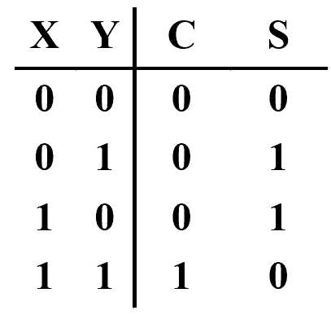
S和C分别对应：\(S=X\oplus Y, C=XY\).
还有以下几种不同的写法：
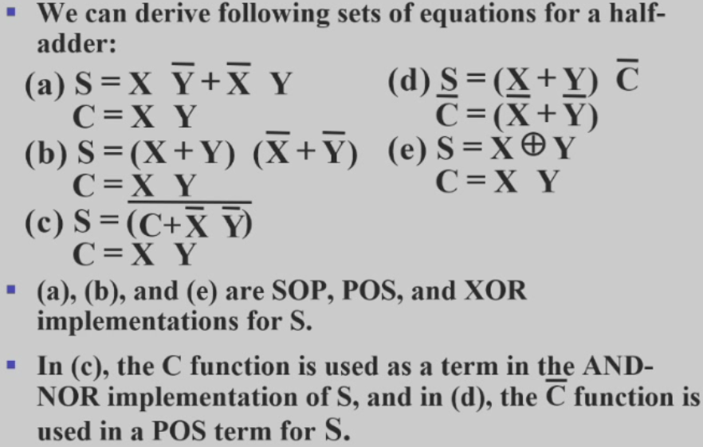
进行多路电路设计时，可以根据不同电路的性能和成本，选择不同的设计。
最常见的是下面两种：
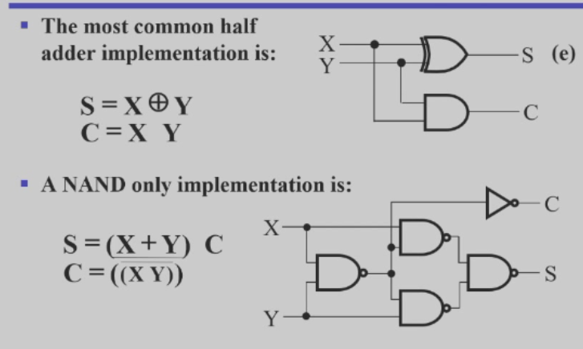
第二种下半部分的四个与非门实际上构成了一个异或结构,而C则通过对X|Y取非得到，节省成本。
全加器 Full Adder¶
考虑进位，故有三个输入：X是加数，Y是被加数，Z是上一位对运算位的进位。

从卡诺图可以看出S可以表示为奇函数（异或）
\(S=X\overline Y\overline Z+\overline X Y \overline Z + \overline X\overline YZ+XYZ=X\oplus Y\oplus Z\)
\(C=XY+XZ+YZ=XY+(X+Y)Z\)
注意
\(X+Y\) 和 $X \oplus Y $ 仅在X=Y=1时结果不同，但因为XY的存在，对\(C=XY+(X+Y)Z\)整体结果没有影响
因此可以改写为：
\(C=XY+XZ+YZ=XY+(X\oplus Y)Z\)
称 XY 为 进位产生函数（carry generate）(\(XY=1\) 时一定会有进位)，记为G；
称 \(X\oplus Y\) 为 进位传递函数（carry propagate）(\(X\oplus Y=1\) 时，XY=0，会把进位Z传下去，即 \(C=Z\))，记为P
电路实现：

注意
\(C_0 = G + P \cdot C_i\) 是进位逻辑函数
直白地理解就是：
要么G = 1，P = 0 产生进位赋给\(C_0\)；
要么P = 1 ，G = 0 传递进位赋给\(C_0\)
行波进位¶
模拟竖式加法，从低位开始逐位计算，将进位给到下一位作为输入

如下图中，最长的路径是从 A0 或 B0 到 S3:
经历一个异或的进位传递、三个与或和最终一个求和的异或输出
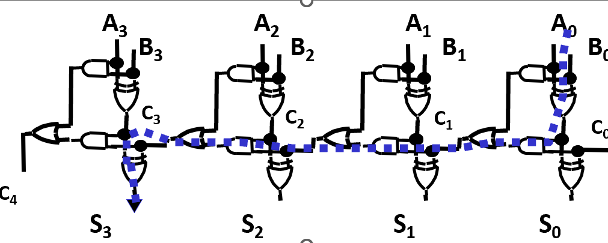
但是便宜没好货：加法器位数越多，延迟越大，
主要的延迟来自进位传递，以此为切入点可以进行优化
超前进位（Carry LookAhead）¶
不再逐位传递进位，而是直接由一开始的进位得到 降低了延迟，但是电路复杂度大大提升
对于状态 i, 称 \(G_i\) 为 进位产生, \(P_i\) 为 进位传递.
- \(G_i\), \(P_i\), and \(S_i\) are local to each cell of the adder
- \(C_i\) is also local each cell
全加器的更新可以定义为
这样 \(C_{i+1}\) 可以从 cells 中去掉，同时我们可以推导得到一组跨越多个单元的进位方程：
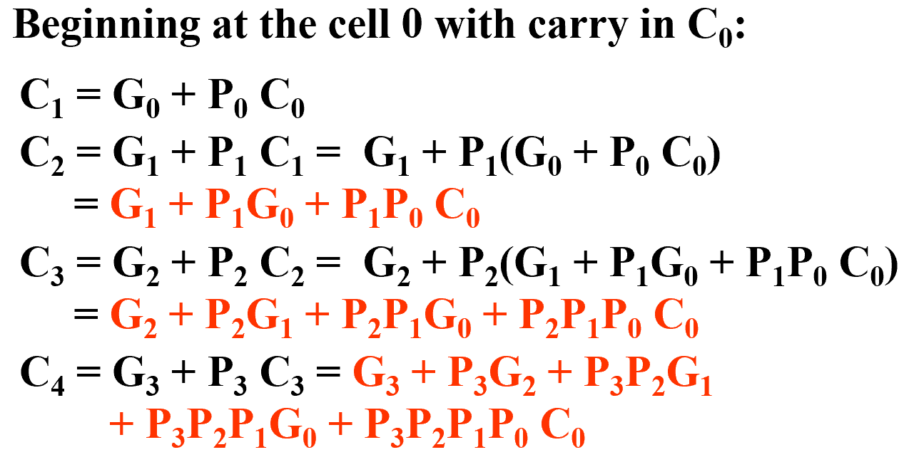
于是我们可以得到下面的 Carry Look-ahead Adder:
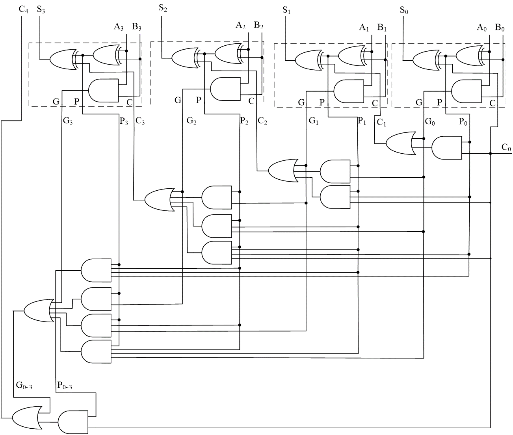
基本上由两大部分组成：
-
上半部分：\(A_iB_i\) 构成的进位产生 $ G_i$ 、\(A_i \oplus B_i\) 构成的进位传递 \(P_i\)、\(A_i \oplus B_i \oplus C_i\)构成的本位输出
称为Partial full adder，缺少的部分为进位输入
-
下半部分：输入包括最低位进位\(C_0、G_i、P_i\)，产生输出\(C_i\)
称为CLA，
此方法减少了门延迟，如\(C_3\)只需经过一个与或结构便可得到
然而增加了电路成本和复杂度（尤其是更多位的加法器）
可以进行如下的优化：
对于16位加法：初步优化是分为四块CLA，分别负责0~3、4~7、8~11、12~15，再通过行波进位将四块连通；
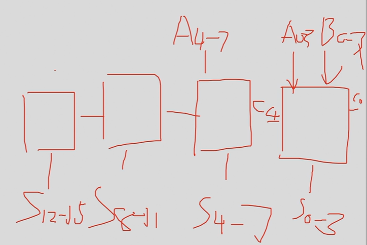
进一步，既然行波可以优化为超前进位，那么分块的行波进位也可以优化为分块的超前进位。
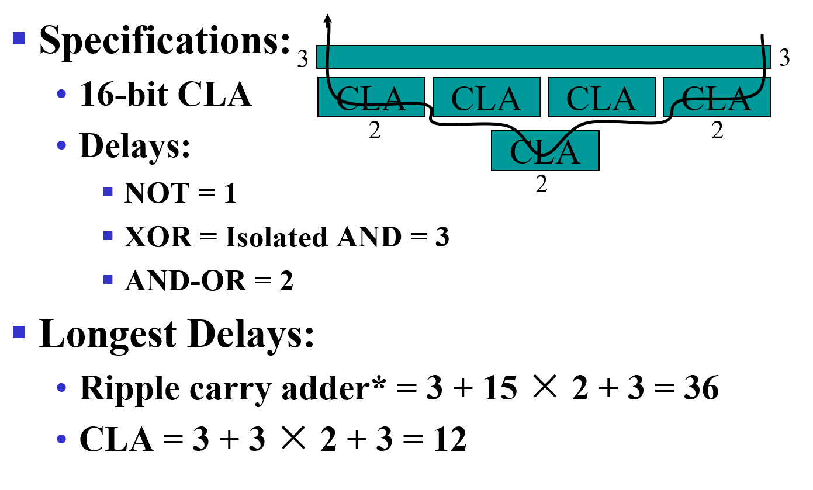
考虑如下的改写：
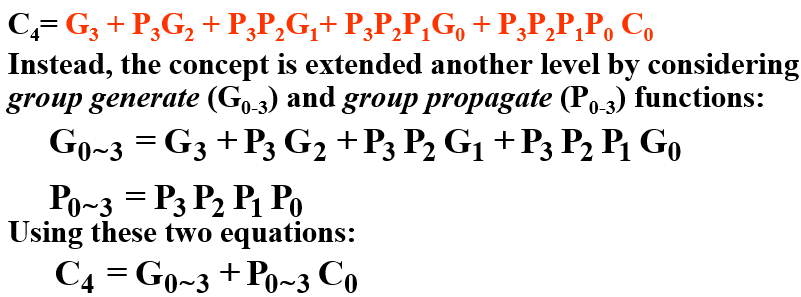

红色的模块和先前的\(C_{i+1} = G_i + P_iC_i\)类似
这样我们就得到了 16-bits adder
compare
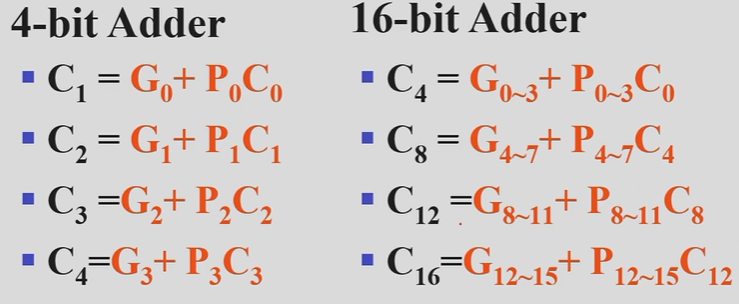
类似思路可得到 64 位的加法器。
无符号减法(Unsigned Subtraction)¶
- Subtract the subtrahend(减数) N from the minuend(被减数) M
- 若无借位，则结果即为 \(M - N\)
- 若有借位，则结果为 \(2^n + M - N\)，可以看作对 \(M - N\) 的补码
To do both unsigned addition and unsigned subtraction requires:

补码（2's Complement）¶
-
Diminished Radix Complement of N 反码
defined as \(r^n-1-N\)
（ \(r^n-1\) 在2进制中即为一连串的1,再减去N,可以看作对N的每一位取反，得到反码） The 1's complement is obtained by complementing each individual bit (bitwise NOT).
-
2’s complement 补码
defined as \(r^n-N\)
- 反码按位取反再加一
- 也可以这样求补码：从后向前第一个 1 及其右边不变，此后其他位全部求反
-
用补码实现减法 \(M-N\)
- 计算位宽为 n 位，则加上 \(2^n\) 对计算结果无影响
- 对于 \(2^n + M - N\):
- 若 \(M \ge N\)，结果为 \(M - N\)
- 若 \(M < N\)，结果为 \(2^n + M - N\) 通过对被减数取补码，再进行加法运算，可以方便地实现减法
注意
对N取补码，再加上M:
- 相加后最高位无进位则说明实际上有借位，此时需要对结果再取补码
- 相加后最高位有进位则说明实际上无借位，结果即为正确结果
Example

进位是 1 表明结果为正，不需对结果修正
进位是 0 表明结果为负，需对结果修正
有符号整数（Signed Integers）¶
-
Signed Integer Representations: 第 n-1 位表示正负，后面 bits[n-2:0] 表示绝对值大小，具体而言有以下三种，其中 2's Complement 最常用，因为不涉及0和-0的表示问题
- Sign-Magnitude Representation：最高位为符号位，其余位表示绝对值
- 1's Complement Representation：正数不变，负数取反
- 2's Complement Representation：正数不变，负数取反加一
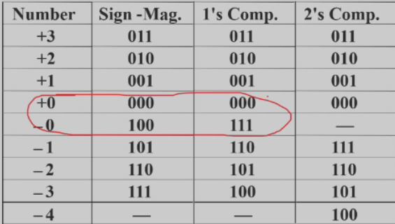
有符号真值计算（Signed-Magnitude Arithmetic）¶
- 检查三个符号位的奇偶性（两个操作数的符号位（加数/被加数 or 减数/被减数）和加减法的符号位，我们一般认为加法是 0, 减法是 1）用于判断溢出
可能溢出的情况：正加正(000)，正减负(011)，负减正(101)，负加负(110) - 如果三个数的符号奇偶性为0（亦即有偶数个1，可能发生溢出）：
- 将绝对值相加。
- 检查是否溢出（最高位是否有进位）。
- 结果的符号与第一个操作数的符号相同。
- 如果三个数的符号奇偶性为1：
- 将第二个数的绝对值从第一个数中减去。
- 如果发生借位：
- 取结果的二进制补码。
- 结果的符号为第一个操作数的符号的补码。
- 溢出永远不会发生。
有符号补码计算（Signed-Complement Arithmetic）¶
- 加法：直接将两个数相加，不考虑符号位，最后结果的符号位即为两个数的符号位
- 减法：将被减数取补码，再加上减数，最后结果的符号位即为两个数的符号位
Signed 2’s Complement Examples
- 1101 + 0011
Result is 0000. The carry out of the MSB is discarded. - 1101 - 0011
Complement 0011 to 1101 and add. Result is 1010. The carry out of the MSB is discarded.
电路设计：
- 2’s Complement Adder/Subtractor

- 补码实现：
- 利用异或门，当 S=0 时异或门相当于保持另一个信号，当 S=1 时异或门相当于对另一个信号取反；
- 将\(C_0\)设置为 1，即可实现减法，实现反码加1.
回顾
异或门可以看作一个可控的反相器，当控制信号为 1 时，输出和输入相反；当控制信号为 0 时，输出和输入相同。
- Overflow Detection
可能溢出的情况：正加正(000)，正减负(011)，负减正(101)，负加负(110)
Example

溢出的判断条件是最高位和次高位的进位不同，即 \(V = C_n \oplus C_{n - 1}\)
V = 1 时表示溢出，V = 0 时表示没有溢出
其他算术函数（Other Arithmetic Functions）¶
-
对固定数进行加减法
- Incrementer（自增器）& Decrementer（自减器）： 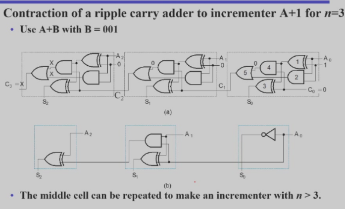
通过异或门的性质化简全加器电路
如果需要多位的自增器，只需将中间的全加器重复串联即可 + 乘法器 + 乘法器的设计可以通过加法器实现，通过将乘数重复加法器的次数，然后将结果相加 + 也可以通过移位实现，将乘数的每一位与被乘数相乘，然后将结果相加 + 除法器 + 除法器的设计可以通过移位实现，将被除数左移，直到大于除数，然后减去除数，重复直到被除数小于除数 + 也可以通过加法器实现，将除数重复加法器的次数，然后将结果相加 + 填0： + MSB end(最高位填0): + 对于无符号数，直接填就行 + 对于有符号数，需要判断符号位：如果是正数，直接填0；如果是负数，需要填1 + LSB end(最低位填0): 直接填就行
算术运算单元（Arithmetic Logic Unit (ALU)）¶
ALU 用于执行算术和逻辑运算：
- 算术单元：执行加法、减法、乘法、除法等算术运算
- 逻辑单元：执行逻辑运算，如与、或、非、异或等
Example


其中 \(Y_i=B_iS_0+\overline B_iS_1\)
控制端 S0 S1 的变化可以给加法器提供不同的输入
| S1 | S0 | Y |
|---|---|---|
| 0 | 0 | 0 |
| 0 | 1 | \(B\) |
| 1 | 0 | \(\overline B\) |
| 1 | 1 | 1 |
- \(G = A\):传输
- \(G = A+1\):自增
- $G = A+ \overline{B} -1 $:减法
创建日期: 2024年4月13日 01:03:43